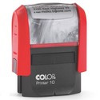
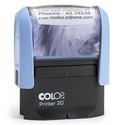
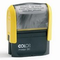
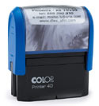
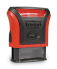
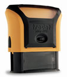
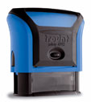
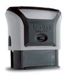

Samonamáčecí, dřevěná a rychlorazítka
Nemá opravdu cenu popisovat jaká, zdali dřevěný, samonamáčecí, paginovací ... Řekněte si sami jakou máte představu a my vám nabídneme jen to nejlepší.
Colop
Colop printer 10
Nejmenšími modely razítek ve své skupině - vytváří rohový otisk razítka a tímto nejběžnějším formátem se hodí obzvláště pro adresy bez loga.
Maximální velikost otisku je 27 x 10 mm.
Maximální počet řádků je 3.
Colop printer 20
Razítka správné velikosti pro ty nejdůležitější informace. Razítka Printer 20 vytváří rohový otisk razítka a tímto nejběžnějším formátem se hodí obzvláště pro adresy bez loga.
Maximální velikost otisku je 38 x 14 mm.
Maximální počet řádků je 4.
Colop printer 30
Razítka s jednou z nejčastěji používaných velikostí pro razítka s adresami - vytváří rohový otisk razítka a tímto nejběžnějším formátem se hodí obzvláště pro adresy s logem nebo bez loga.
Maximální velikost otisku je 47 x 18 mm.
Maximální počet řádků je 5.
Colop printer 40
Nabízí dostatečně velkou plochu také pro delší adresy a různé informace - vytváří rohový otisk razítka a tímto nejběžnějším formátem se hodí obzvláště pro adresy s logem nebo bez loga.
Maximální velikost otisku je 59 x 23 mm.
Maximální počet řádků je 6.
Trodat
Trodat 4910
Nejmenšími modely razítek ve své skupině - vytváří rohový otisk razítka a tímto nejběžnějším formátem se hodí obzvláště pro adresy bez loga.
Maximální velikost otisku je 26 x 9 mm.
Maximální počet řádků je 3.
Trodat 4911
Razítka správné velikosti pro ty nejdůležitější informace. Razítka Printer 20 vytváří rohový otisk razítka a tímto nejběžnějším formátem se hodí obzvláště pro adresy bez loga.
Maximální velikost otisku je 38 x 14 mm.
Maximální počet řádků je 4.
Trodat 4912
Razítka s jednou z nejčastěji používaných velikostí pro razítka s adresami - vytváří rohový otisk razítka a tímto nejběžnějším formátem se hodí obzvláště pro adresy s logem nebo bez loga.
Maximální velikost otisku je 47 x 18 mm.
Maximální počet řádků je 5.
Trodat 4913
Nabízí dostatečně velkou plochu také pro delší adresy a různé informace - vytváří rohový otisk razítka a tímto nejběžnějším formátem se hodí obzvláště pro adresy s logem nebo bez loga.
Maximální velikost otisku je 58 x 22 mm.
Maximální počet řádků je 6.